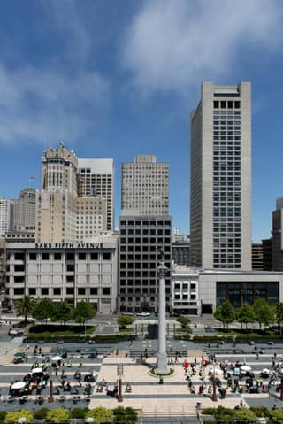
landmark:sanfrancisco#union-square“Union Square, San Francisco, California” — Highsmith, Carol M., 1946-, photographer · 2012-01-01 · Library of Congress
Public domain · loc 2013630152 · high · modern · still looks: yes
title: "Union Square, San Francisco, California"
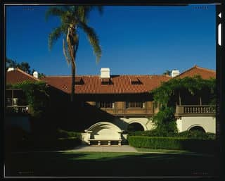
landmark:siliconvalley#montalvo-arts-center-villa-montalvo“Villa Montalvo, Montalvo Road, Saratoga, Santa Clara County, CA” — Historic American Buildings Survey, creator · Documentation compiled after 1933 · Library of Congress
Public domain · loc ca0982 · high · historic · still looks: yes
title: "Villa Montalvo, Montalvo Road, Saratoga"; photos "NORTH FRONT", "SOUTH FRONT FROM OVAL GARDEN"
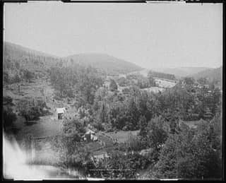
landmark:statecollege#horseshoe-curve-national-historic-landmark“Horseshoe Curve, up Jacob's [i.e., Jack's] Mountain, Penna.” — Glover, L. S. (Lycurgus S.) · 1903 · Library of Congress
Public domain · loc 2016819130 · med · historic · still looks: yes
title "Horseshoe Curve, up Jacob's [i.e., Jack's] Mountain, Penna."
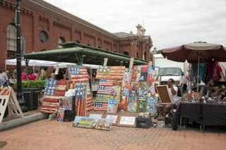
landmark:washingtondc#eastern-market“Eastern Market is a public market in the Capitol Hill neighborhood of Washington, D.C.” — Highsmith, Carol M., 1946-, photographer · 2010-01-01 · Library of Congress
Public domain · loc 2010642052 · high · modern · still looks: yes (photographed after 2009 reopening)
title: "Eastern Market is a public market in the Capitol Hill neighborhood"
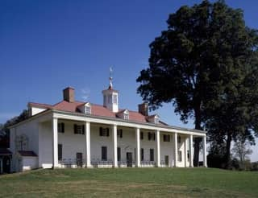
landmark:washingtondc#george-washingtons-mount-vernon“Mount Vernon, George Washington's Virginia estate” — Highsmith, Carol M., 1946-, photographer · 1980-01-01 · Library of Congress
Public domain · loc 2011636029 · high · modern · still looks: yes
title "Mount Vernon, George Washington's Virginia estate"
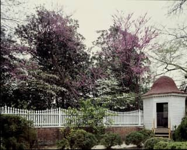
landmark:washingtondc#george-washingtons-mount-vernon“Garden at George Washington's estate, Mount Vernon in Virginia” — Highsmith, Carol M., 1946-, photographer · 1980-01-01 · Library of Congress
Public domain · loc 2011631561 · med · modern · still looks: yes
title "Garden at George Washington's estate, Mount Vernon in Virginia"
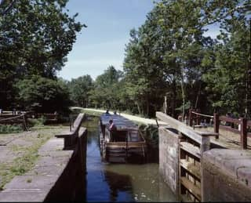
landmark:washingtondc#georgetown-waterfront-and-the-c-and-o-canal“C&O Canal locks, Georgetown, Washington, D.C.” — Highsmith, Carol M., 1946-, photographer · 1980-01-01 · Library of Congress
Public domain · loc 2011630750 · high · modern · still looks: yes
title: "C&O Canal locks, Georgetown"
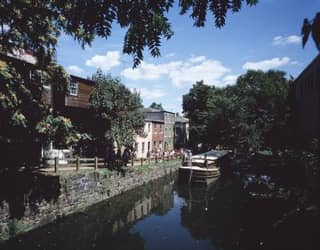
landmark:washingtondc#georgetown-waterfront-and-the-c-and-o-canal“Tourist barge in the Georgetown lock of the Chesapeake & Ohio Canal, C&O Canal, Washington, D.C.” — Highsmith, Carol M., 1946-, photographer · 1980-01-01 · Library of Congress
Public domain · loc 2011636336 · high · modern · still looks: yes (barge service varies)
title: "Georgetown lock of the Chesapeake & Ohio Canal"
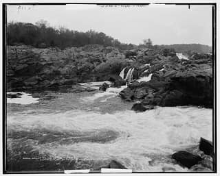
landmark:washingtondc#great-falls-park“Great Falls of the Potomac” — Detroit Publishing Co., copyright claimant · 1901-01-01 · Library of Congress
Public domain · loc 2016800811 · med · historic · still looks: yes
title "Great Falls of the Potomac"
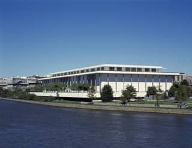
landmark:washingtondc#john-f-kennedy-center-for-the-performing-arts“Kennedy Center for the Performing Arts, Washington, D.C.” — Highsmith, Carol M., 1946-, photographer · 1980 · Library of Congress
Public domain · loc 2011632175 · high · modern · still looks: yes
title: "Kennedy Center for the Performing Arts, Washington, D.C."
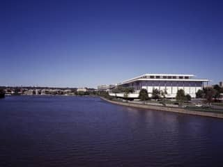
landmark:washingtondc#john-f-kennedy-center-for-the-performing-arts“Kennedy Center from the Potomac River in Washington, D.C.” — Highsmith, Carol M., 1946-, photographer · 1980 · Library of Congress
Public domain · loc 2011631365 · high · modern · still looks: yes
title: "Kennedy Center from the Potomac River"
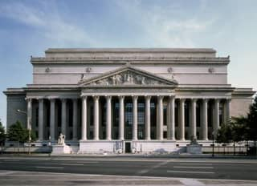
landmark:washingtondc#national-archives-museum“Pennsylvania Avenue view of the National Archives building, Washington, D.C.” — Highsmith, Carol M., 1946-, photographer · 1980-01-01 · Library of Congress
Public domain · loc 2011633826 · high · modern · still looks: yes
title "Pennsylvania Avenue view of the National Archives building"
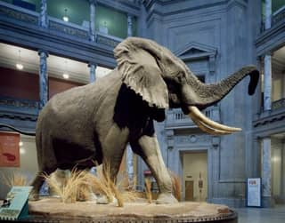
landmark:washingtondc#national-museum-of-natural-history“The elephant at the Smithsonian National Museum of Natural History, Washington, D.C.” — Highsmith, Carol M., 1946-, photographer · 1980-01-01 · Library of Congress
Public domain · loc 2011631532 · med · modern · still looks: yes
title "The elephant at the Smithsonian National Museum of Natural History"
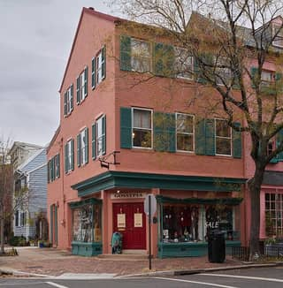
landmark:washingtondc#old-town-alexandria-and-king-street“Scene along King Street, a historic street in Old Town Alexandria, Virginia, a city immediately south of Washington, D.C., and once a larger, more thriving river port than the nation's capital city” — Highsmith, Carol M., 1946-, photographer · 2019-01-01 · Library of Congress
Public domain · loc 2020724822 · high · modern · still looks: yes
title: "Scene along King Street, a historic street in Old Town Alexandria"
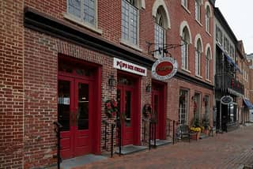
landmark:washingtondc#old-town-alexandria-and-king-street“A block of King Street in Old Town Alexandria, Virginia, a city immediately south of Washington, D.C., and once a larger, more thriving river-port city than the nation's capital city” — Highsmith, Carol M., 1946-, photographer · 2019-01-01 · Library of Congress
Public domain · loc 2020724817 · high · modern · still looks: yes
title: "A block of King Street in Old Town Alexandria"
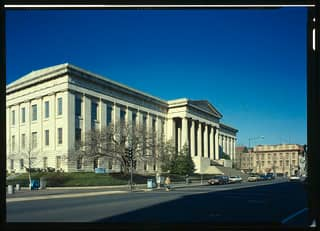
landmark:washingtondc#smithsonian-american-art-museum-and-national-portrait-galler“Patent Office Building, Bounded by 7th, 9th, F, and G Streets Northwest, Washington, District of Columbia, DC” — Historic American Buildings Survey, creator · Documentation compiled after 1933 · Library of Congress
Public domain · loc dc0194 · med · historic · still looks: yes
title "Patent Office Building"; LoC blog: building "now The Donald W. Reynolds Center"
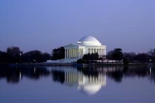
landmark:washingtondc#thomas-jefferson-memorial“Jefferson Memorial, Washington, D.C.” — Highsmith, Carol M., 1946-, photographer · 2006-01-01 · Library of Congress
Public domain · loc 2010630676 · high · modern · still looks: yes
title "Jefferson Memorial, Washington, D.C."
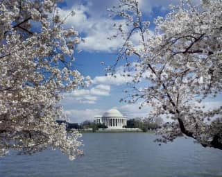
landmark:washingtondc#thomas-jefferson-memorial“Jefferson Memorial with cherry blossoms, Washington, D.C.” — Highsmith, Carol M., 1946-, photographer · 1980-01-01 · Library of Congress
Public domain · loc 2011630694 · high · modern · still looks: yes
title "Jefferson Memorial with cherry blossoms, Washington, D.C."
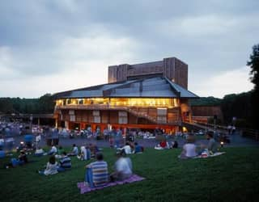
landmark:washingtondc#wolf-trap-national-park-for-the-performing-arts“Wolf Trap National Park for the Performing Arts, Vienna, Virginia” — Highsmith, Carol M., 1946-, photographer · 1980-01-01 · Library of Congress
Public domain · loc 2011632981 · med · modern · still looks: check (Filene Center rebuilt 1984)
title: "Wolf Trap National Park for the Performing Arts, Vienna"
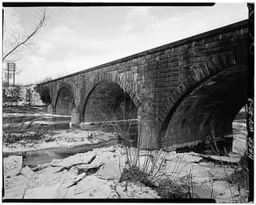
landmark:wheeling#centre-market-historic-district“Centre Market, Market Street between Twenty-second & Twenty-third Streets, Wheeling, Ohio County, WV” — Historic American Engineering Record, creator · Documentation compiled after 1968 · Library of Congress
Public domain · loc wv0006 · high · historic · still looks: yes (1853/1890 market houses survive)
title: "Centre Market, Market Street between Twenty-second & Twenty-third Streets, Wheeling"
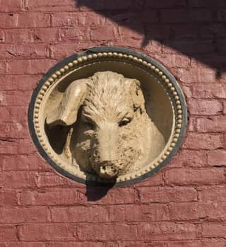
landmark:wheeling#centre-market-historic-district“Pig's-head detail on an outside wall of Centre Market in Wheeling, West Virginia. Built in 1853, the downtown marketplace is not only the oldest market house in Wheeling but also the oldest in the nation” — Highsmith, Carol M., 1946-, photographer · 2015-01-01 · Library of Congress
Public domain · loc 2015632082 · med · modern · still looks: yes
title: "Pig's-head detail on an outside wall of Centre Market in Wheeling"